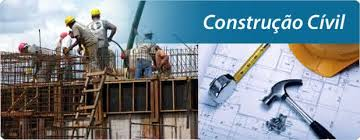
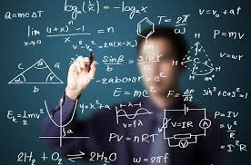
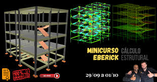
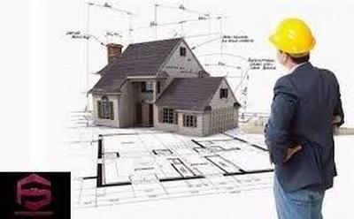

Curso de Engenharia e Construção Civil
construção civil é uma das profissões mais antigas, surgindo cerca de 4000 a.C. Através dos tempos, esses profissionais ajudaram a moldar a infraestrutura do mundo. Aqui no GINEAD, você encontra uma infinidade de cursos voltados para essa área da engenharia civil, com temas relacionados à planejamento e gestão de obras, construção, noções de orçamento, pintura e instalações elétricas Nossos cursos online de construção civil têm o objetivo de capacitar profissionais de diversas áreas de atuação e estudantes que desejam atualizar seus conhecimentos, que estão em busca de novos desafios e obter maior aprendizado sobre os temas! A importância da construção civil Você sabe o que é construção civil? Este termo é usado para denominar todos os tipos de construções que interajam com a comunidade, cidade ou população. A Construção Civil envolve inúmeras atividades, como construção de edifícios, estradas, obras de saneamento. Portanto, é essencial na civilização. Essa atividade tem muita representatividade no Brasil, sendo um dos mais importantes indicadores de crescimento da economia. Isso porque, cada vez mais, as grandes cidades estão recebendo novos moradores nas pequenas cidades. Dessa forma, a construção de novas estruturas é necessária para comportar essas pessoas. Um fenômeno vital para a Construção Civil foi a criação da roda, em 3500 a.C. Essa ferramenta simplificou o transporte e ajudou a viabilizar estruturas gigantescas, como as Pirâmides do Egito e a Muralha da China. No Brasil, essa atividade começou no período colonial, com a construção de igrejas e fortificações. O que nós do GINEAD esperamos quando oferecemos variadas opções de cursos online de construção civil? Além de planejar, reformar e construir, esperamos que as pessoas que decidam fazer parte desse setor atuem na criação de uma melhor qualidade de vida da população.
Cálculo Estrutural
 Cálculo estrutural é o dimensionamento de elementos estruturais para que eles resistam aos esforços que lhe são solicitados e ofereça segurança para a obra. Feito por meio de cálculos matemáticos e de física, ele também ajuda a otimizar os custos da construção. Esse dimensionamento faz parte do projeto estrutural, que é criado pelos profissionais de engenharia. É comum ouvir falar da velha rixa entre arquitetos e engenheiros, não é mesmo? Mas o calculista estrutural é um grande parceiro do arquiteto, afinal é que ele faz com que o projeto arquitetônico fique em pé. Para facilitar seu projeto e a relação com o engenheiro calculista, no post de hoje vamos mostrar com mais detalhes como funciona o cálculo de estrutura na prática, os programas mais utilizados para a sua criação e como fazer cálculo estrutural de uma residência. Boa leitura! O que é cálculo estrutural? Cálculo estrutural é o dimensionamento de elementos estruturais para que eles resistam aos esforços que lhe são solicitados e ofereça segurança para a obra. Feito por meio de cálculos matemáticos e de física, ele também ajuda a otimizar os custos da construção. Trata-se de um cálculo que pode ser usado em diversos sistemas construtivos, como: alvenaria; concreto armado; steel frame; wood frame.
Gerenciamento de Obras
Para quem é o curso de Gerenciamento de Obras? Este curso online foi desenvolvido para estudantes e profissionais das áreas de: Arquitetura e Urbanismo Engenharia Civil Design de Interiores E outras áreas da Construção Civil O curso de Gerenciamento de Obras é para quem deseja aprender todos os procedimentos necessários para que suas obras sejam executadas corretamente, de acordo com o que foi proposto em projeto, dentro do orçamento estipulado, no prazo proposto, e que respeitem as normas ambientais e de segurança. O que vou aprender no curso de Gerenciamento de Obras? Você irá aprender: Como fazer o gerenciamento de projetos através do PDCA Como realizar o fluxo de planejamento Como desenvolver o cronograma de projeto utilizando o Project Como desenvolver o cronograma executivo e de suprimentos Projetos: legal, básico, executivo, complementares e detalhamentos Fases de Obra: escavação, locação e fundação, canteiro de obras, estruturas, instalações elétricas e hidrossanitárias, vedação, impermeabilização, fosso, piso e cobertura. Como realizar um mapa de cotação Como realizar um diário de obra Pós-obra